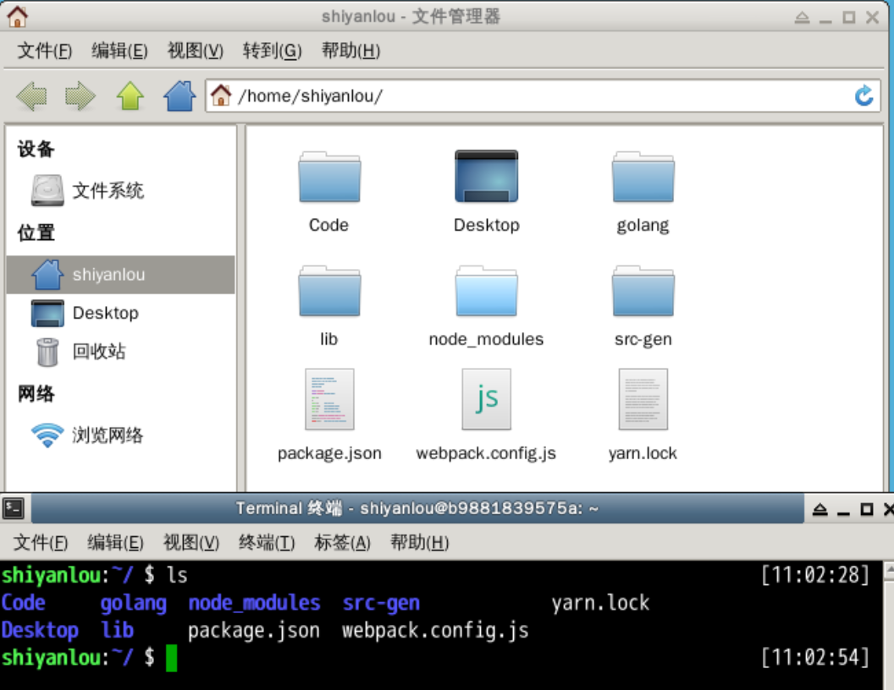
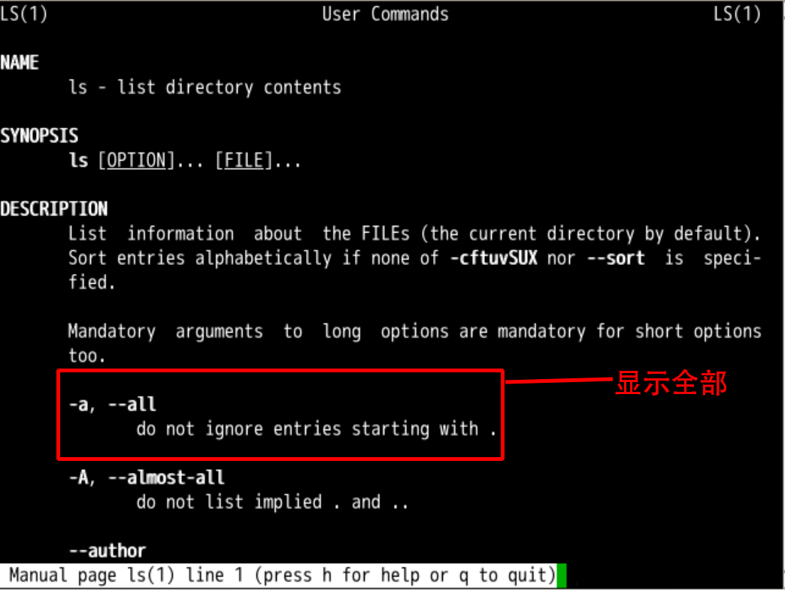
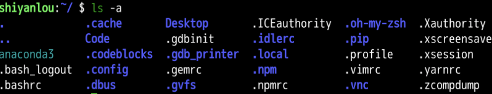
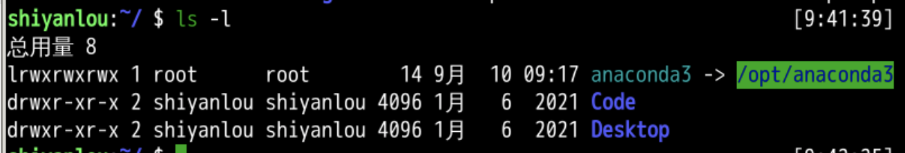
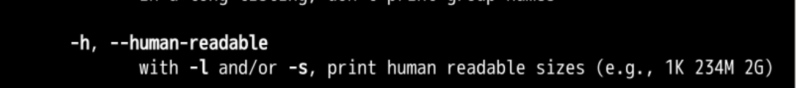
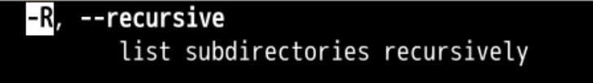
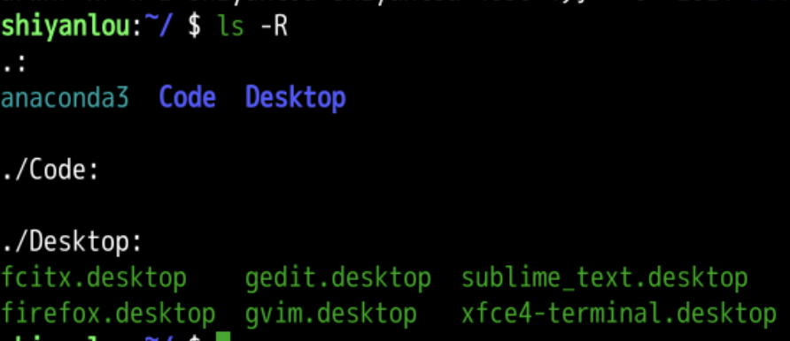
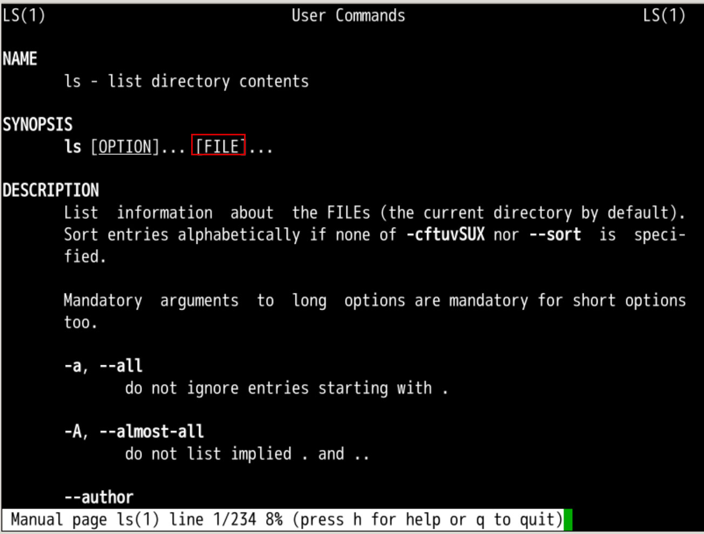
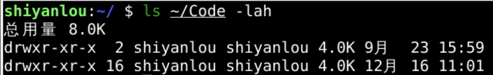

这儿都有啥 ls
回忆上次内容 😌
- 上次讲了比whatis更详细的帮助man
- 可以查mannual
- 还了解到了命令分成
- 命令
- 选项
- 参数
- 什么不会就查
- 细节都在手册里
- 我们再来查查 ls 的手册：
man ls

- ls 的手册比较复杂 🤗
复杂
-
ls 的手册比较复杂 🤗
- 感觉好长，不要着急慢慢读，🤫
- 你得熟悉命令行的生活方式。🤗
- 为什么？
- 为什么要用命令行查询？🤔
-
在图形界面 (GUI) 里面
- 查询不是很方便吗？
- 🤔
比较

- 我们并不排斥使用 GUI
- Graphic User Interface
- 但是我们得明白 CLI 是根本
- Command Line Interface
- 为什么是根本
- 我们在gui里面只能看到这些名字
- cli里面会有更多细节
- 什么细节？
细节
- 第一条选项
-a- 显示不忽略以"."开始的

- linux 中以 "." 开始的文件和文件夹
- 为隐藏文件和文件夹
- 如果不忽略以"."开始的
- 就是全都(
all)显示的意思吧 🤠
- 我们来试试 👉
动手
ls -a
- 这下我们看到隐藏文件（以"."开头的）了！✌
- 但是这些文件堆在一起
- 看不到更多细节
- 想看到大小、日期等细节怎么办呢？🤔

ls选项 -l
- 通过查询手册我们发现了
-l- 这个参数，
l的意思是list - 这个参数可以以列表方式查询文件
- 这个参数，
- 让我们快去试试吧！
ls -l
- 好像真的列出很多信息

开关
- 我们确实可以以列表的方式查看文件
- 但是我们看不见隐藏文件了，😤
- 我想
- 既能看到隐藏文件
- 又使用列表方式
- 应该怎么办呢？🤔
- 俩开关都打开
ls -l -a
- 或者：
ls -a -l
- 我们还可以把两个开关合并到一起：
ls -al
ls -la
- 还有什么开关吗？🤔
选项-h
- -h
- human readable
- 指的是人类可读：

- 原来的文件大小使用的是字节数量
- 字节数量不利于阅读
- 人们可以使用 k,m,g,t 等存储容量单位来观察了
ls -h
- 并没有反应？！😱
- 怎么回事？
原因
- 因为这里只显示文件名
- 只有在列表模式下
- 才显示大小！👊
- 所以我们 -lh 两个开关要一起用
ls -lh
- 不过文件夹里面有什么东西还是看不见啊
递归查询文件
- 使用
-R开关可以递归地查询子文件下的内容

- 不但查询文件夹里面有什么
- 就连子文件夹下面的东西也不放过
R是大写的- 对应 Recursive
- 意思是递归
- 我们来试试。
ls -R
- 我们可以看到很多文件
- 可以使用终端的滚轮上下翻页

- 可以指定哪个文件夹来看么？
参数

- 也可以加上这个参数
/etc- 代表要对
/etc下面的文件递归地列表
- 代表要对
ls -R /etc
ls是命令command- 起决定作用
- 决定这次是列表操作
-R是选项option- 是一个开关
- 要把子文件夹也都翻遍
/etc是参数- 是
ls执行的对象 - 就在这个文件夹里面翻
- 是
- 选项和参数可以交换吗？
验证

- 实践证明
- 确实选项和参数是可以交换的
进一步，再深入
- 如果我想要对
/proc执行 ls 操作- 不但要递归查询
- 而且要列表
- 不但要列表而且要用人类可读的方式列表
- 而且还要显示出隐藏文件
- 不但要列表而且要用人类可读的方式列表
- 而且要列表
- 不但要递归查询
- 这个应该怎么写呢？🤔
- 大家可以自己试试～
- 我们下次再看！